Dado el siguientes datos XPath online real-time tester, evaluator and generator for XML & HTML
(xpather.com) se pide realizar las siguientes consultas:
- Titulo de las actividades
//actividades/actividad/titulo/text()Resultado 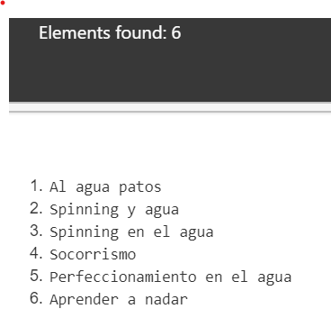 - Mostrar el código de la actividad, título y nivel.
//actividades/actividad/codigo/text()|/actividades/actividad/titulo/text()|/actividades/actividad/@nivelResultado 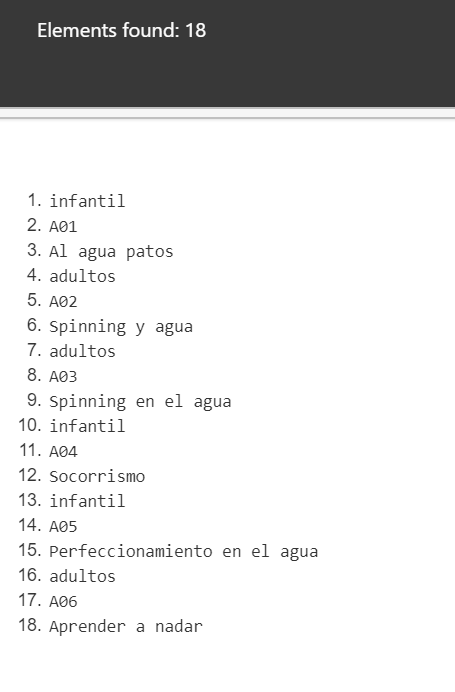 - El primer título de la actividad.
//actividad[1]/sesiones[1]Resultado 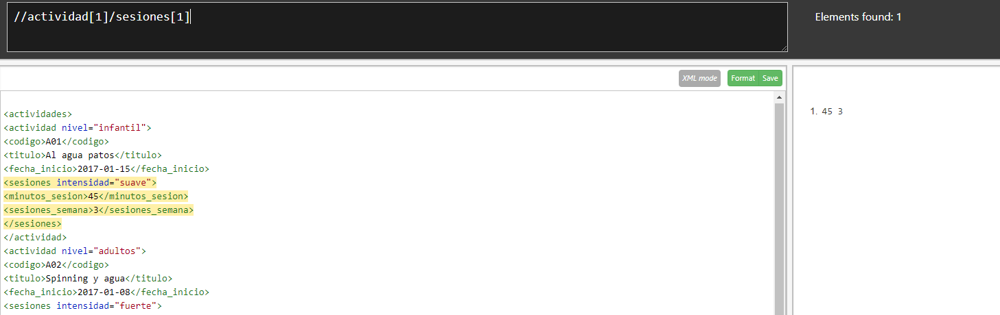 - El último título de la actividad.
//actividades/actividad[last()]/titulo/text()Resultado 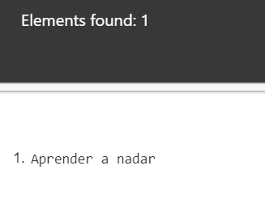 - Todos los elementos descendientes de las actividades infantiles
//actividades/actividad[@nivel="infantil"]/*Resultado 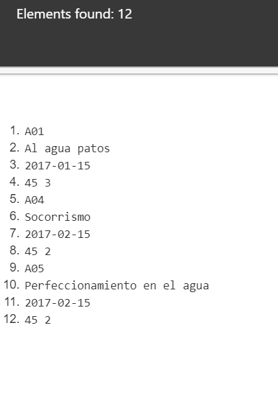 - El nombre de las actividades para adultos.
//actividades/actividad[@nivel="adultos"]/titulo/text()Resultado 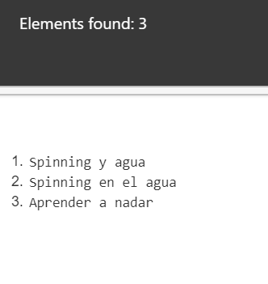 - El nombre de las actividades con dos sesiones semanales
//actividades/actividad[sesiones/sesiones_semana=2]/titulo/text()Resultado 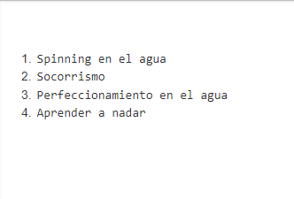 - Número de actividades
count(actividades/actividad)Resultado 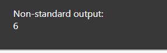 - Si queremos convertir el resultado a cadena de caracteres, podemos usar la función string().
string(count(/actividades/actividad))Resultado 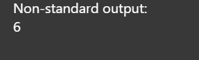 - Cuenta del número de actividades infantiles.
count(/actividades/actividad[@nivel="adultos"]/sesiones/sesiones_semana)Resultado 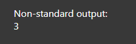 - Suma de las sesiones semanales de las actividades para adultos.
sum(/actividades/actividad[@nivel="adultos"]/sesiones/sesiones_semana)Resultado 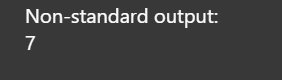 - Nodos de la actividad de código A06.
//actividades/actividad[codigo="A06"]/*Resultado 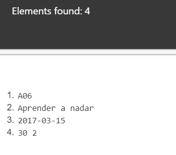 - Duración de las actividades con intensidad fuerte
//actividades/actividad/sesiones[@intensidad="fuerte"]/minutos_sesion/text()Resultado 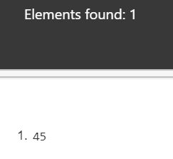 - Mostrar el código de las actividades cuya duración coincide con la duración del 1º actividad.
//actividad[sesiones/minutos_sesion=//actividad[1]/sesiones/minutos_sesion/text()]/titulo/text()Resultado 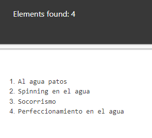 - Título de las actividades del año 2018.
//actividad[substring(fecha_inicio,1,4)="2018"]/titulo/text()Resultado 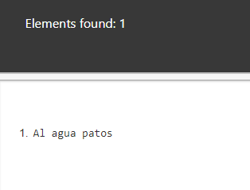